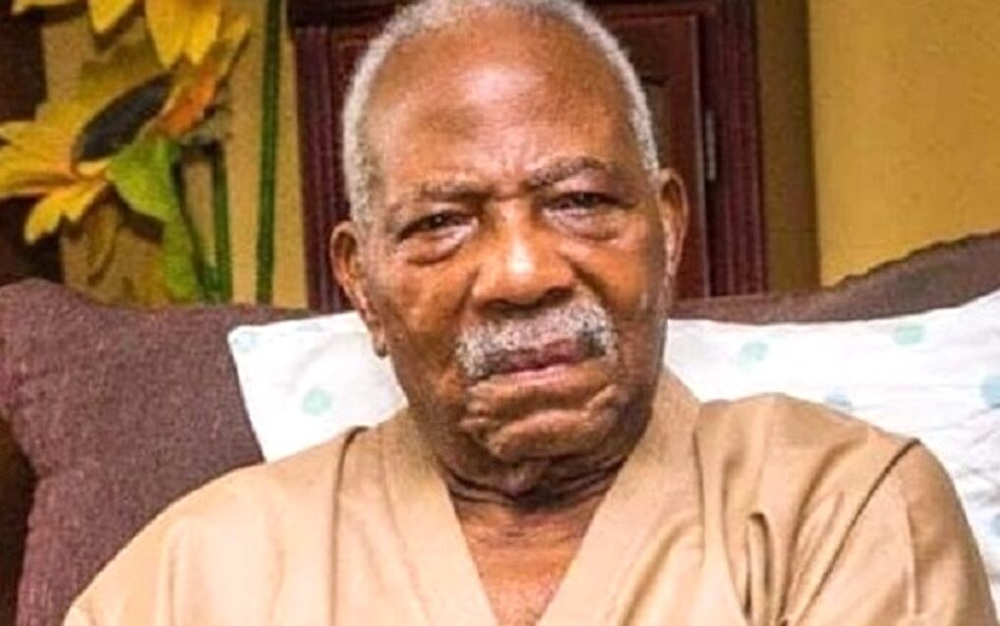

Ondo govt appoints committee for Fasoranti’s burial

The Ondo State Government has appointed a committee to coordinate a state burial for Reuben Fasoranti, the late Afenifere leader who died on 20 October at the age of 100. The committee is to work with his family and Afenifere’s leadership to arrange a dignified farewell. The government has not announced a date or detailed programme for the state burial; the family has scheduled the funeral service and interment for 17 December.
Kayode Ajulo, a Senior Advocate of Nigeria, will chair the committee, with Eniola Olushola as secretary. Its other members are Gbenga Fasua, Gbenga Atiba, Kosemani Kolawole, Bakkita Bello, Idowu Otetubi, Modupe Martins, George Asonja, Muyiwa Ogunyemi, Stephen Abitogun and Adetunji Gbenga.
The committee’s formation was announced in a statement by Ebenezer Adeniyan, the governor’s Chief Press Secretary. The statement said the government approved the state burial in recognition of Fasoranti’s contributions to Ondo State, Yorubaland and Nigeria. Governor Lucky Aiyedatiwa believes the late elder statesman should be honoured for his years of service, wisdom and selfless leadership, it added.
Fasoranti was an educationist and a prominent figure in progressive politics and the struggle for democracy. His political career was associated with Obafemi Awolowo’s tradition, including the defunct Action Group and later the Unity Party of Nigeria. He served as commissioner for finance in the government of Ondo State Governor Adekunle Ajasin from 1979 to 1983, and later became one of the leading figures in Afenifere.
Separately, on Wednesday, the Senate considered a motion by Adeniyi Adegbonmire, who represents Ondo Central, urging the federal government to name an educational institution after Fasoranti in recognition of his contributions to education and national development.
Source: Premium Times